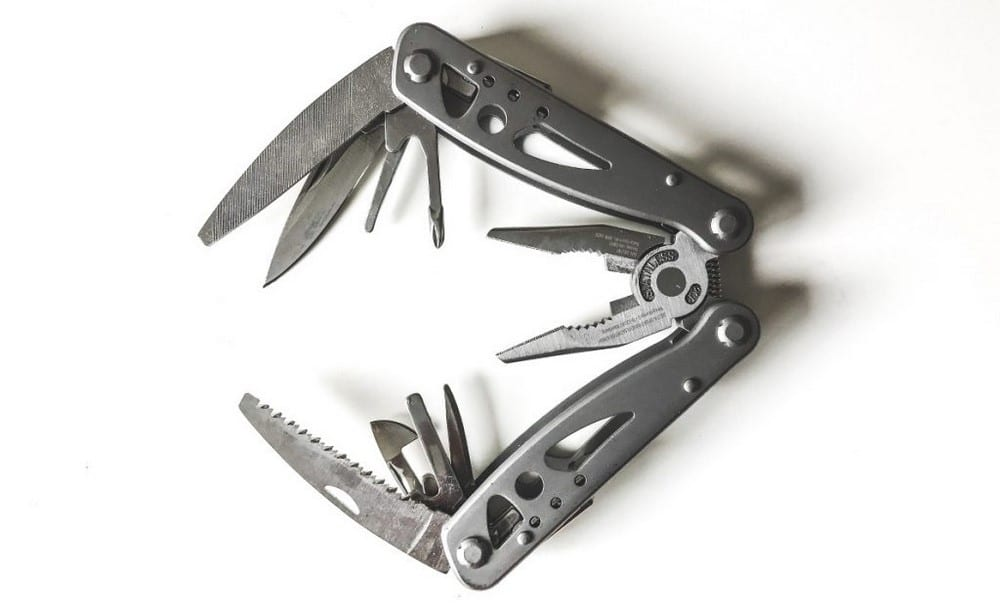
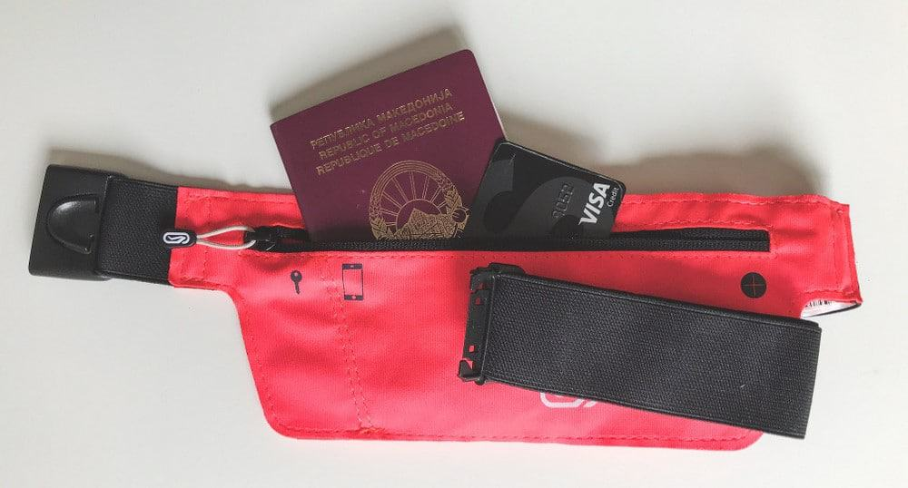
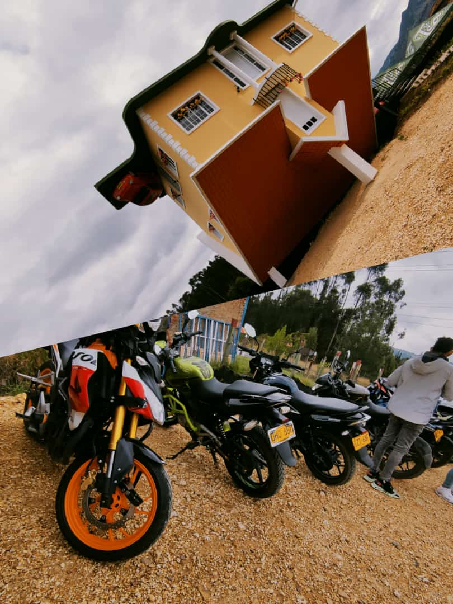

“No es locura, no es fanatismo, solo cuando manejas una moto descubres la paz y libertad que se siente frente al volante recorriendo los caminos” Otra manera de conocer los impresionantes escenarios que nos ofrece México es viajando en motocicleta, la verdad es que es una de las mejores formas para acercarte más a paisajes que muy pocos conocen, sentir la adrenalina y emoción de viajar casi libre con una velocidad considerable es toda una aventura, pero es mucho mejor cuando vas en compañía de tus amigos bikers.
1. Navaja multiuso En tu bolsillo siempre has de tener una navaja suiza, práctica, pequeña y ligera. Sin ocupar mucho espacio pero multifuncional,. La usarás para preparar un sándwich durante la travesía, para conseguir astillas y hacer un fuego en las acampadas o para apretar los tornillos sueltos de la moto. Sin duda uno de esos utensilios que usarás a diario.
2. Bolsillo secreto para dinero y pasaporte Esa es la mejor manera de estar seguro de que tu pasaporte, dinero y tarjetas de crédito estarán a salvo de ser extraviadas o robadas. Especialmente si viajas con mucho efectivo en zonas más remotas donde no acostumbran a funcionar con tarjetas de crédito.
3. Fotos de tu viaje Si para ti es importante el contacto con los lugareños pero muchas veces no hablas el mismo idioma, descubrirás que la mejor manera de presentarte ante ellos es con fotografías impresas de tu propio viaje. Fotos de otros lugares del mundo, de tu propio país, de tu familia… Son una gran manera de conectar con ellos, ganarte su confianza y conseguir que te abran las puertas de su casa.
